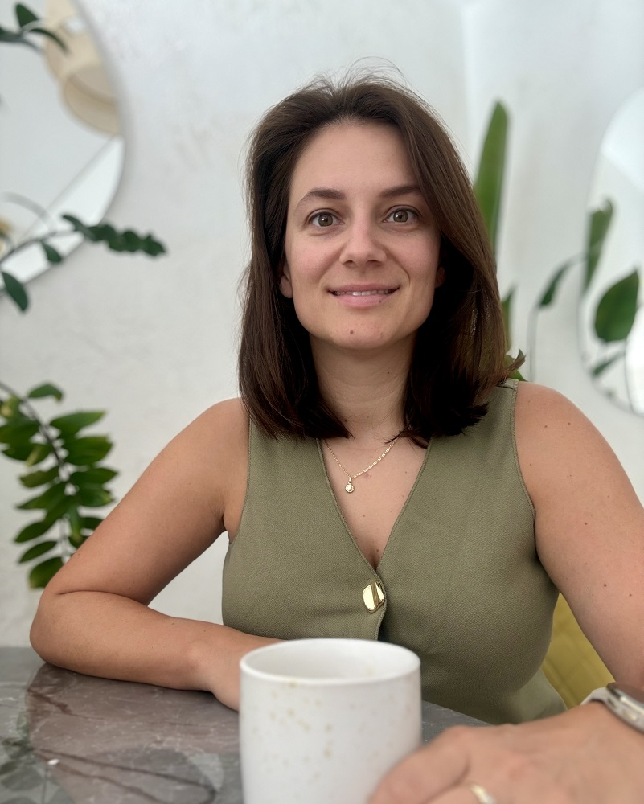
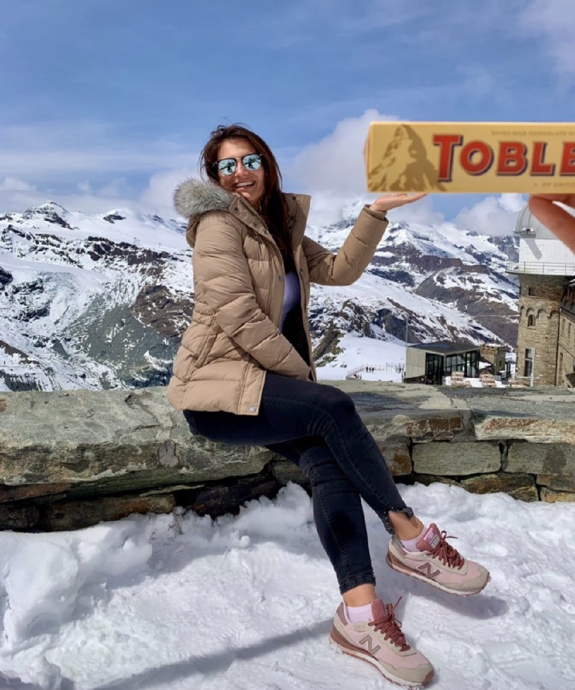

Boros Zsófia
Boros Zsófia
01
Hiszem, hogy nem attól vagy értékes, amit éppen elérsz.
A pozíciód, a teljesítményértékelésed és a sikereid nem határozzák meg az értéked.

Sokáig én is abban hittem, hogy ha elég kitartó
vagyok, sokat dolgozom, és újabb célokat érek
el, akkor majd megérkezik az a belső nyugalom
is, amire vágyom. Kívülről haladtam előre, belül azonban egyre
magasabbra került a mérce. Egy siker után rövid időn
belül megjelent a következő elvárás.
Idővel megértettem, hogy a teljesítmény fontos,
de önmagában nem ad tartós biztonságot.
A coachinghoz ez a felismerés vezetett.
Ma abban támogatom az ügyfeleimet, hogy tisztábban
lássanak, kapcsolódjanak a saját szükségleteikhez,
és olyan működést alakítsanak ki, amely hosszú távon
is fenntartható számukra.
Tíz évet töltöttem multinacionális környezetben, vezetőként és regionális szerepekben. Olyan közegben dolgoztam, ahol a magas teljesítmény, a folyamatos változás és a nagy felelősség a mindennapok része volt. Legutóbb a Procter & Gamble közép-európai marketingigazgatójaként dolgoztam.
Vezettem multikulturális és multifunkcionális
csapatokat, valamint dollármilliós márkák stratégiai
növekedéséért feleltem.
Ismerem a döntéshozókra nehezedő nyomást, a
teljesítménykultúra elvárásait és azt a belső
feszültséget is,
amikor valaki hosszú időn keresztül próbál
folyamatosan bizonyítani.

Két évet éltem expatként Svájcban, így tudom, milyen
kihívást jelenthet karriert építeni, egy új
szerepkörben helytállni, és közben távol lenni a
családtól és a barátoktól.
A Covid alatt költöztem, de a nehéz kezdetek ellenére az életem egyik legmeghatározóbb és legszebb fejezetévé vált. Mélyítette az önismeretemet, megtanított a mentális kitartásra, valamint arra, hogyan építsek ki új kapcsolatokat, és hogyan tartsam meg a régieket több ezer kilométer távolságból.

A sport mindig is az egyik fix pont volt az
életemben. Tizenhárom évig versenyszerűen
kézilabdáztam, és ma is rendszeresen állítom magam
új kihívások elé: legyen szó 30 kilométeres
futásról, búvárkodásról vagy teniszről.
A sport számomra nem csupán az állóképességről
vagy a fizikai teljesítményről szól, hanem egy
olyan belső tartásról és szemléletről is, amely
a versenypályán és az üzleti életben egyaránt
fontos.
Megtanított fókuszt tartani, nyomás alatt is
megőrizni a nyugalmamat, és kezelni a kudarcokat.
Ezek a készségek a coachingfolyamatokban is gyakran
visszaköszönnek. A sportolói és vezetői
tapasztalataimra építve jelenleg Sport Mentál és
Team Coaching képesítésen veszek részt, amelyet
októberben szerzek meg.

A pozíciód, a teljesítményértékelésed és a sikereid nem határozzák meg az értéked.
A túlórázás önmagában nem tesz értékesebbé.
A bizonytalanság nem jelenti azt, hogy nem vagy elég jó.
Nem fogom megmondani, mit kell tenned. Kérdéseket fogok feltenni – néha kényelmetleneket.
A coachingban az erősségeidre is ránézünk, hogy te is jobban lásd és elhidd őket.
Foglalj egy ingyenes 30 perces konzultációt, és nézzük meg, hogyan tudlak támogatni.
Ingyenes konzultáció foglalása